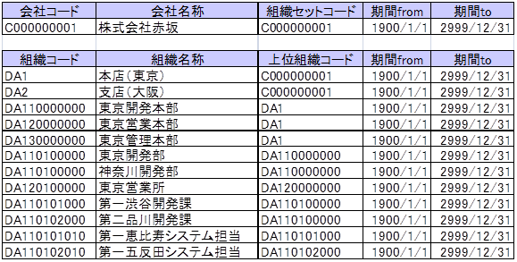
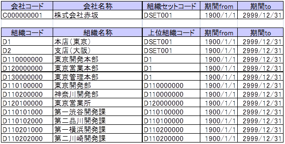

1.2. 組織登録¶
基本組織セットに所属する組織を登録します。基本組織セットと計上組織セットが別々の場合、会計上の組織である計上組織を計上組織セットに登録します。
1.2.1. 着手条件¶
計上組織セットを会社と別にする場合は、計上組織セットの登録を終えていること。
1.2.2. 実行手順¶
1.2.2.1. 事前準備¶
組織名称、組織のツリー構造、各組織の組織コードを事前に決定しておくと登録をスムーズに行うことができます。
基本組織セットの設計例（会社コードC000000001の場合）

計上組織セットの設計例（基本組織セットと別に設定する場合）

組織を追加する際、組織に対して登録しなければいけない情報。
設定項目
備考
組織コード
組織名
組織名称
有効期間
ロケール
親組織コード
組織の親子関係を設定する。一つの親組織が、複数の組織を内包することもある。


1.2.2.2. 基本組織セットに所属する組織の登録¶
テナント管理者権限でテナント管理画面にログインし、基本組織セットに所属する組織を登録します。
メニュー
テナント管理 マスタメンテナンス 組織
「会社選択」を押下して、テナント環境セットアップにて指定した会社コードを選択します。
基本組織セットを選択し、その配下にユーザの所属組織として使用する組織を登録します。
コラム
組織の配下に新しい組織を登録すると、自動的に親子関係が設定されます。
1.2.2.3. 計上組織セットに所属する組織の登録¶
テナント管理者権限でテナント管理画面にログインし、計上組織セットに所属する組織を登録します。
基本組織セットに所属する組織の登録と同様の手順により、計上組織セットを選択し、その配下に仕訳を計上する組織を登録します。
コラム
本項は、基本組織セットと別に設定する場合のみ実施します。
1.2.2.4. 一括登録により組織の登録を行う場合¶
取込みファイルの準備
シート「マスタ設定シート_組織.csv」、ならびに「マスタ設定シート_組織内包.csv」の所定のフォーマットに従って項目を埋めたcsvファイルを準備します。
「マスタ設定シート_組織.csv」
「組織コード」、「組織名」、「ロケール」を指定します。
「マスタ設定シート_組織内包.csv」
「親組織コード」を指定します。
コラム
有効期間は、一括登録後画面から設定します。また、取込設定ファイルで<start-date>、<end-date>を指定することでも設定可能です。その場合、一度の取込で一つの期間しか指定できません。また、xmlファイルでの取り込みをすれば、個々の組織に対して期間を指定することができます。xmlファイルでの取込については、「IM-共通マスタ インポート・エクスポート仕様書」を参照してください。
取込設定ファイルの会社/組織インポート設定例
<company-import> <format>csv</format>・・・・・・・・・・取込ファイルのフォーマット <encoding>SJIS</encoding>・・・・・・文字コード <extension-param name="with-header">true</extension-param >・・・・・・・ヘッダー有無 <start-date>2021-04-01</start-date>・・・・・・・・・・インポート開始日 <end-date>3000-01-01</end-date>・・・・・・・・・・・インポート終了日 <name>name</name> <file type="department">im_master/data/department.csv</file>・・・インポートターゲットファイル(組織) <file type="inclusion">im_master/data/inclusion.csv</file>・・・・インポートターゲットファイル(組織内包) <file type="attach-user">im_master/data/attach-user.csv</file>・・インポートターゲットファイル(組織所属) </company-import>
CSVファイルの配備
以下の設定ファイルに定めたパスとファイル名にしたがって各csvファイルを配置します。
<パブリックストレージ>/im_master/config/import_config.xmlコラム
パブリックストレージのパスについては、Biz∫APFの逆引き(Cookbook)ストレージパスを確認するを参照してください。
インポートバッチの実行
テナント管理者権限でテナント管理画面にログインし、ジョブネット設定画面から会社・組織インポートを行います。
メニュー
テナント管理 ジョブ管理 ジョブネット設定
ジョブネット一覧より「会社・組織」を選択し、実行します。
ジョブネット一覧
IM共通マスタ インポート 会社・組織ジョブにてcsvファイルをインポートします。
インポート結果を会社・組織画面で確認し、画面から有効期間を設定してください。
1.2.3. 完了条件¶
登録した組織体系を画面から確認します。